circle
▼circle_test (Mixture, circle_modes, 3 runs)
Wasserstein Distance
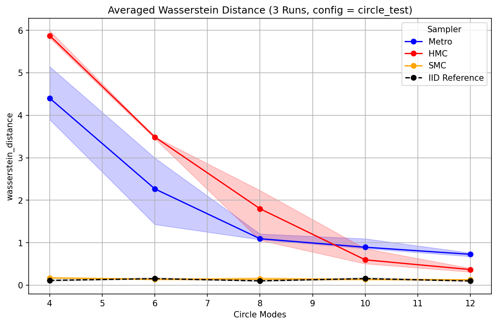
Glass's Δ WS
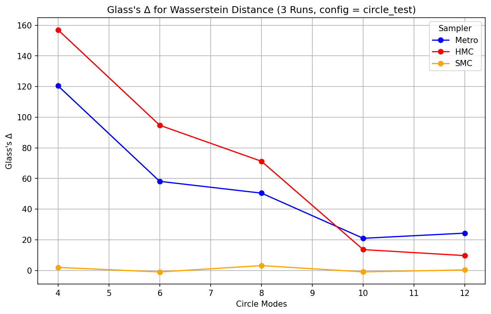
Mmd Rff
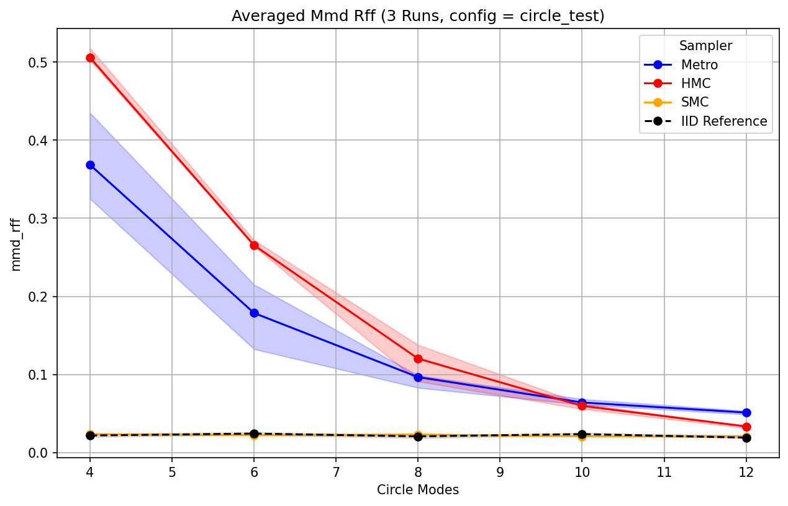
Glass's Δ MMD
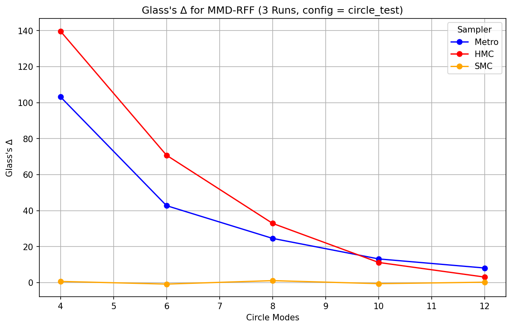
R Hat

Ess
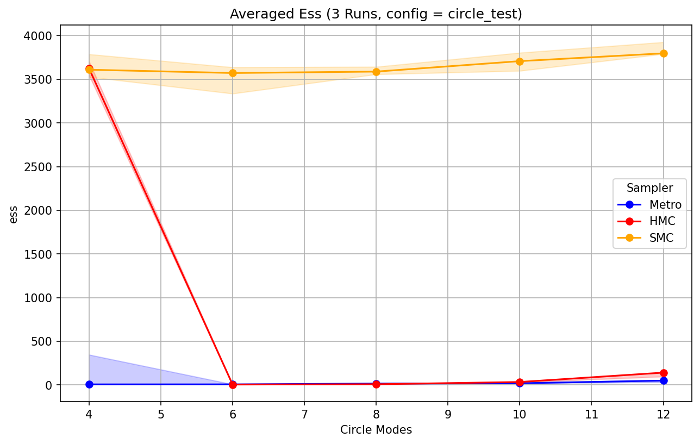
Runtime
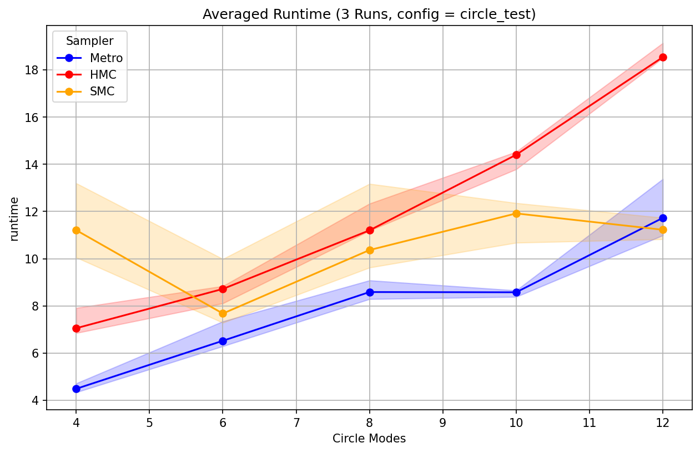
IID Samples KDE across varying values
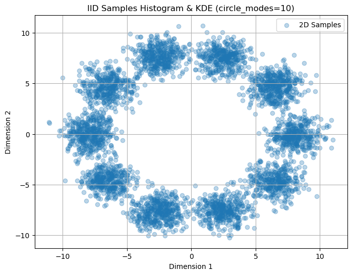
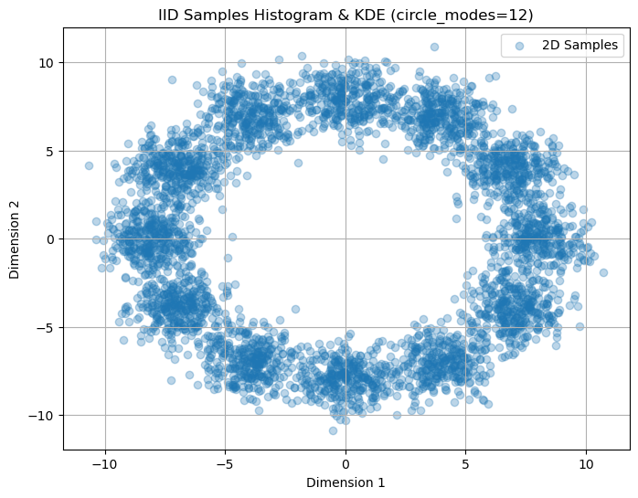
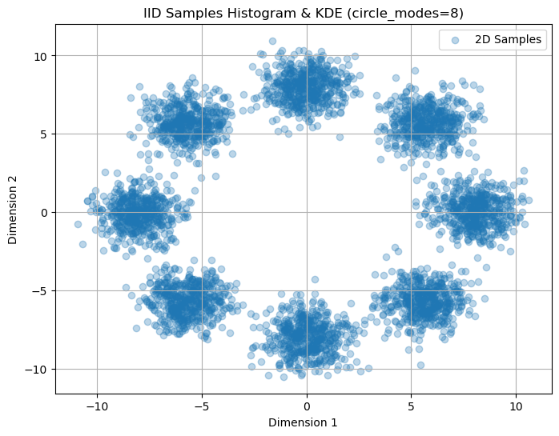
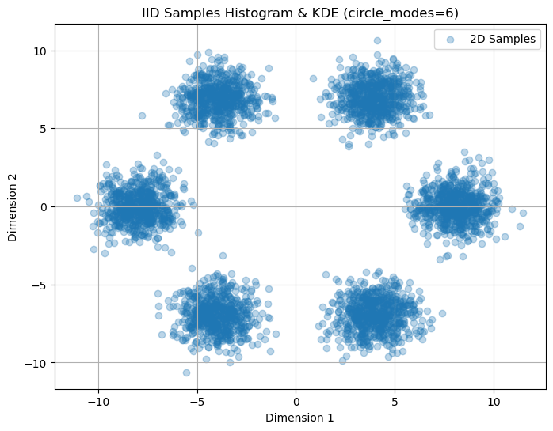
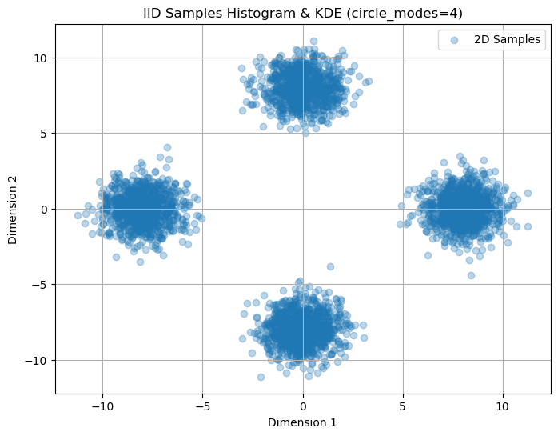
Init Values per Posterior Variant
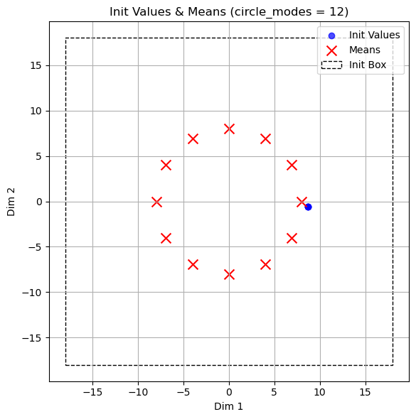
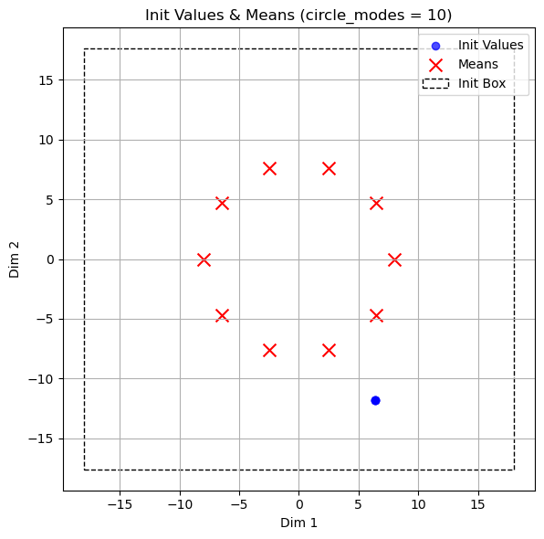
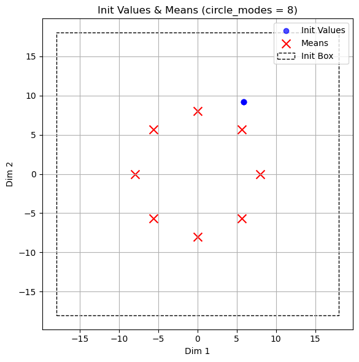
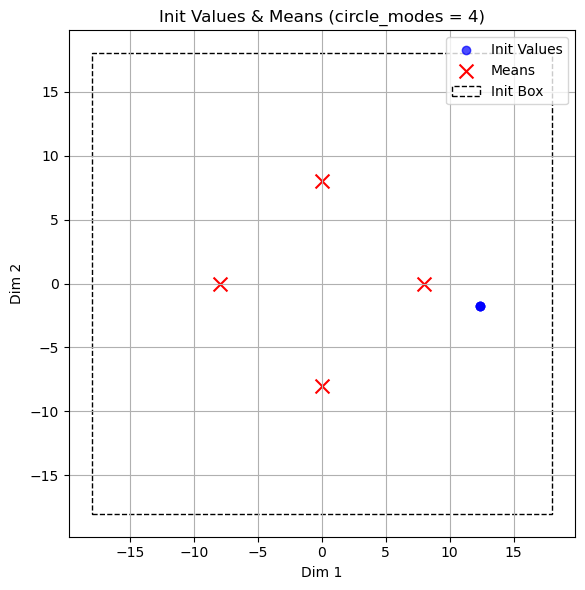
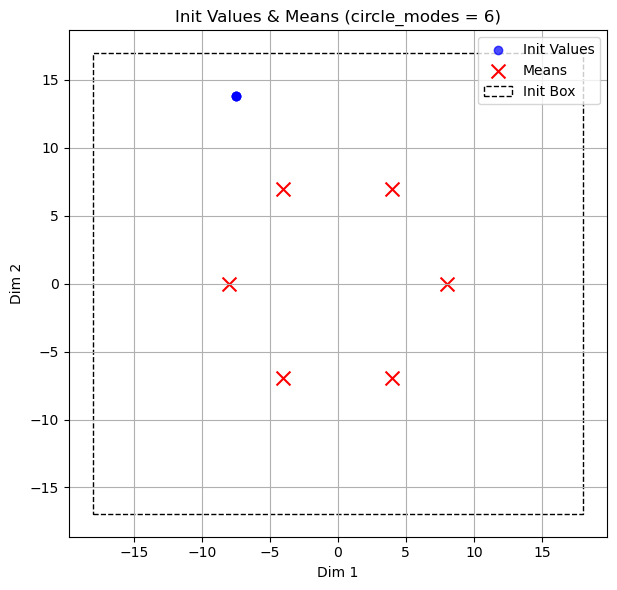